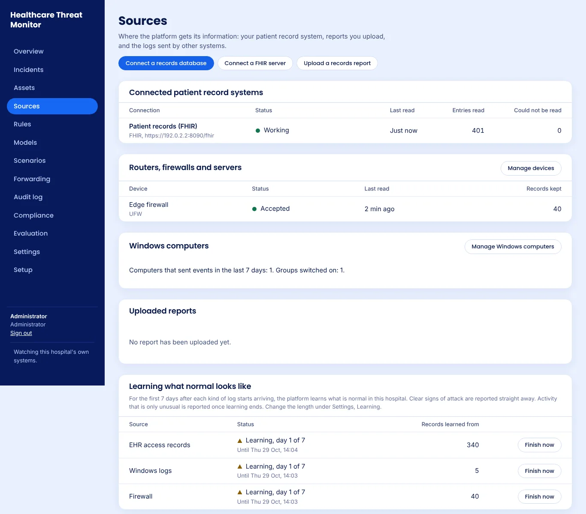

How it works
Hospitals are attacked because their records are valuable and their systems cannot stop. Most cannot afford a security team watching around the clock. This platform does the watching and leaves the decisions to people.
Collect
Reads who opened which patient record, and the logs of Windows computers, routers, firewalls and servers.
Detect
Rules catch clear signs of attack, such as backups being deleted. Models learn what is normal in this hospital and flag what is not.
Review
Related warnings are joined into one incident with the evidence behind it, so an analyst sees the whole story at once.
Respond
A person approves every action, such as cutting a computer off the network. Every step is kept in a tamper evident audit log.
See it catch an attack
Click through the real console as it catches a simulated ransomware attack, from the first warning to the infected computer being cut off. Click the highlighted part of each screen, or use the buttons and your arrow keys.
Every screen is from the real console, captured during one run of its built in ransomware scenario against a simulated hospital, with nothing staged. No real patient, member of staff or hospital appears. The demo plays attacks four times faster than real time.
Install with clicks
Download one file from the latest release. When it starts, its screen shows the address to open and a setup code. Open that address in a browser on another computer, enter the code, and set up the first administrator. Nothing is typed in a terminal.
VirtualBox or VMware .ova
- Choose File, Import Appliance, and pick the file.
- Set its network to Bridged.
- Start it.
Hyper-V hyperv.zip
- Unzip it and make a Generation 2 virtual machine with the disk inside.
- Set Secure Boot to Microsoft UEFI Certificate Authority.
- Start it.
A spare computer usb.img.xz
- Write it to a USB stick with balenaEtcher or Rufus.
- Start the computer from the stick.
- Choose the disk and type ERASE.
Needs 2 processors, 4 GB of memory and 20 GB of disk. Each release lists a checksum for every file. Hospitals already running Docker can use it on their own Linux server instead; see the install guide.
The first start
The first start loads the platform's software in five parts and shows its progress on screen. It takes 5 to 15 minutes on a normal computer, can be switched off at any point, and carries on where it was. Nothing needs to be typed on the appliance itself. In VirtualBox on Windows, a green turtle at the bottom right of the window means it is running slowly: switch off Hyper-V and Memory integrity in Windows and restart. More in If the first start seems stuck.
What it watches
After installing, a setup wizard and short forms connect each source. A seven day learning period teaches it what is normal in your hospital, while clear signs of attack are reported from day one.
- Patient record access, through a read only connection to the record system's database, its FHIR server, or an uploaded report.
- Windows computers, through a small, readable collector installed from one downloaded file.
- Routers, firewalls and servers, which send their logs to a built in receiver once an administrator accepts them.

Built to be trusted with a hospital
Stays in the hospital
Everything runs on the hospital's own computer. Nothing is sent to the project or to anyone else.
Strong sign in
Every account needs a password and an authenticator app. Accounts lock after repeated failures.
Every action recorded
A chained audit log shows any change to past entries, and can be checked independently.
Open to inspection
The code, the tests and a written threat model are public, under the Apache License 2.0.
OpenSSF Best Practices
The project has earned the passing badge of the Open Source Security Foundation's Best Practices programme.
Checked on every change
Automated tests, including a real Windows computer and full installs, CodeQL code scanning and a ZAP attack scan of a running installation, run on every change.
Dependencies kept current
Dependency updates are proposed weekly, and each release lists the vulnerabilities it fixed in the change log.
Private security reports
Security problems are reported privately through GitHub, as the security policy describes.
How it is checked
Every change is tested automatically, and every release is tested again before its downloads are published.
Full installs
A hospital installation is started from nothing on every change, checked to be locked down, backed up, removed, and restored onto a new one.
Attack scanning
CodeQL reads the code, and ZAP attacks a running installation as a visitor and as a signed in administrator.
A real Windows computer
The Windows collector is installed, run and removed on a Windows computer, and what it sends is checked.
Every download
Each release's virtual machine and USB installer are started, switched off part way, started again and set up in a browser before they are published.
Open source and provided as is under the Apache License 2.0. As with any security tool, try it on your own network first. The install guide lists what each test covers.
Read more
Get in touch
Hospitals interested in a pilot, and security researchers with findings, can open an issue on GitHub. Please report security problems privately, as described in the project's security policy.